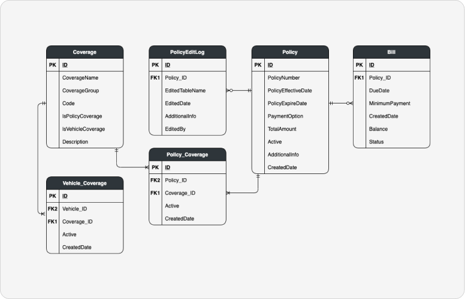

ERD ehk olemite-suhete diagramm on andmebaasi struktuuri visuaalne mudel. See kirjeldab andmebaasi salvestatavaid objekte (olemeid) ja nendevahelisi seoseid.
Ühendused näitavad, mitu ühe olemi kirjet on seotud teise olemi kirjetega.

Olimitabel (Entity) tähistab andmebaasi tabelit. Selles peavad olema:
| Võtme tüüp | Kirjeldus |
|---|---|
| Primary Key (PK) | Primaarvõti - unikaalne tunnus (nt ID), mis identifitseerib kirje. |
| Foreign Key (FK) | Välisvõti - veerg, mis viitab teise tabeli primaarvõtmele, luues seose. |
| Composite Key | Liitvõti - kahe või enama veeru kombinatsioon, mis moodustab unikaalse võtme. |
| Key | Üldine mõiste atribuudile, mida kasutatakse andmete otsimiseks. |